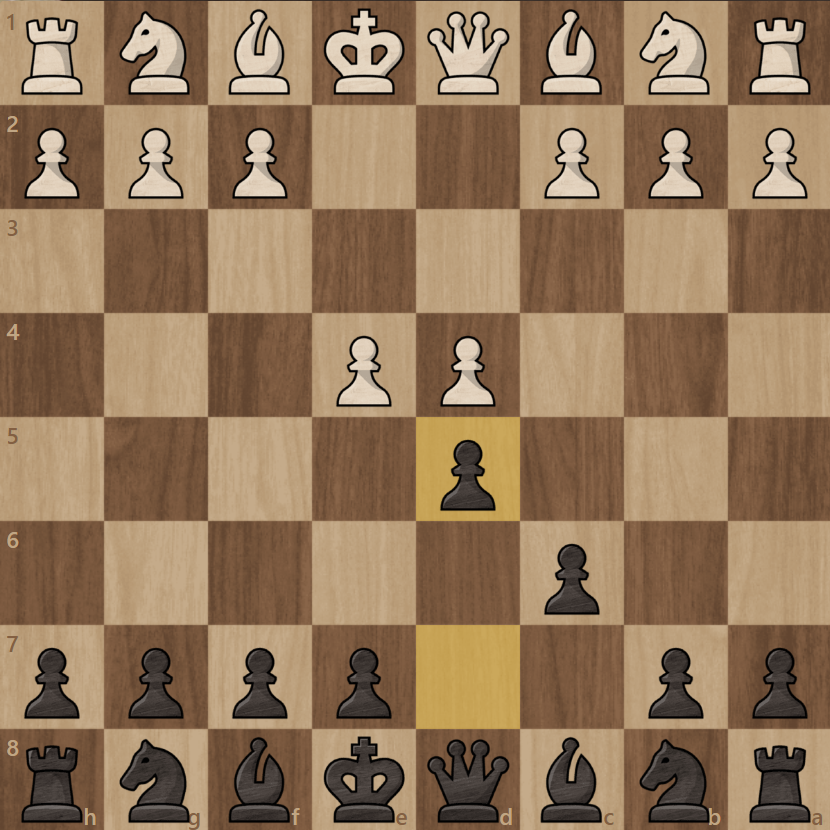
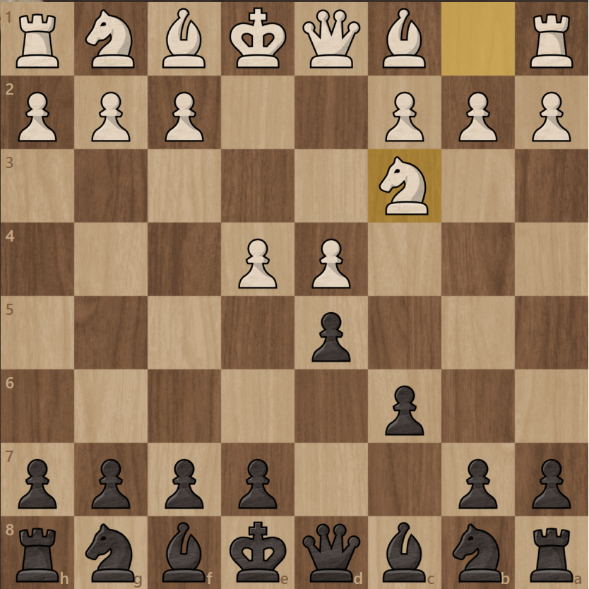
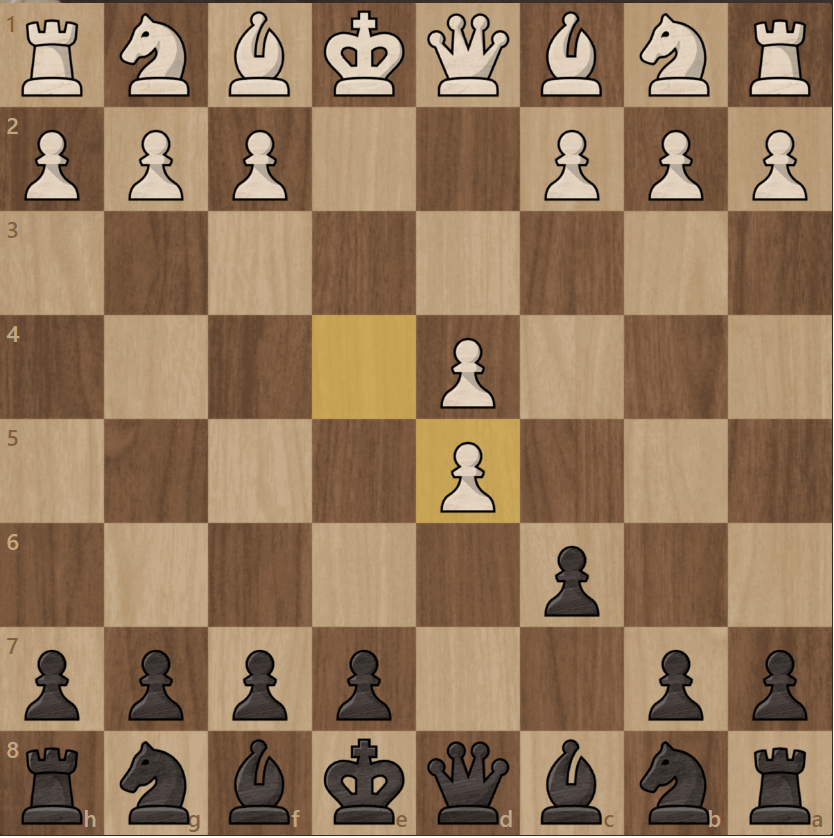
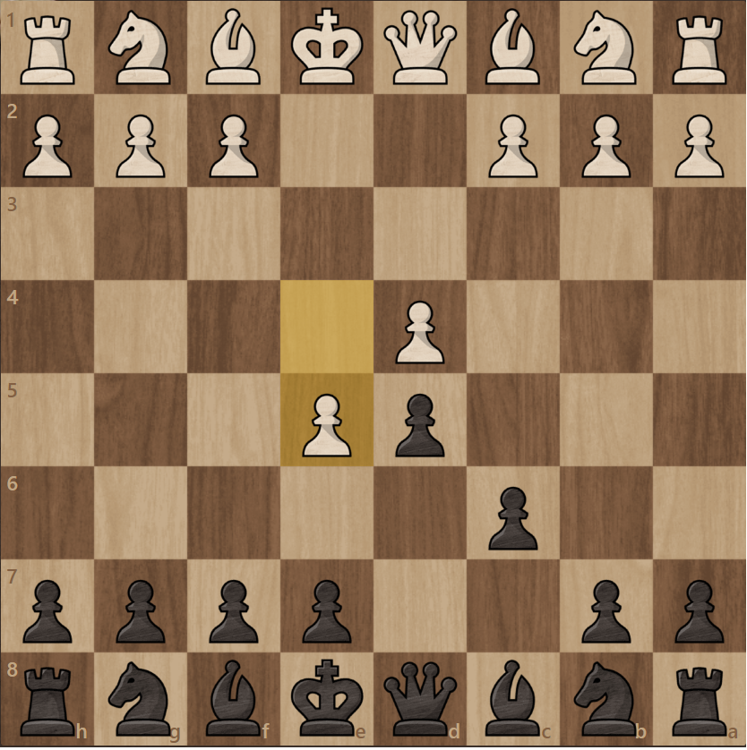
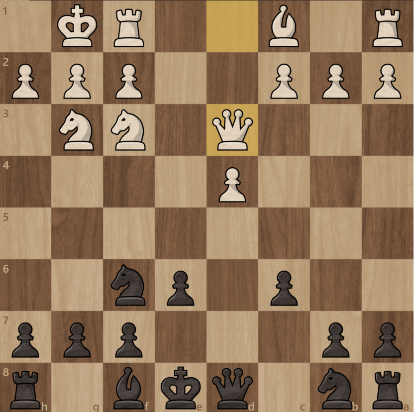
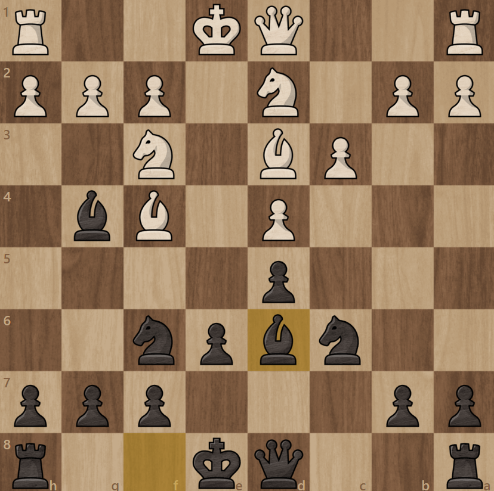
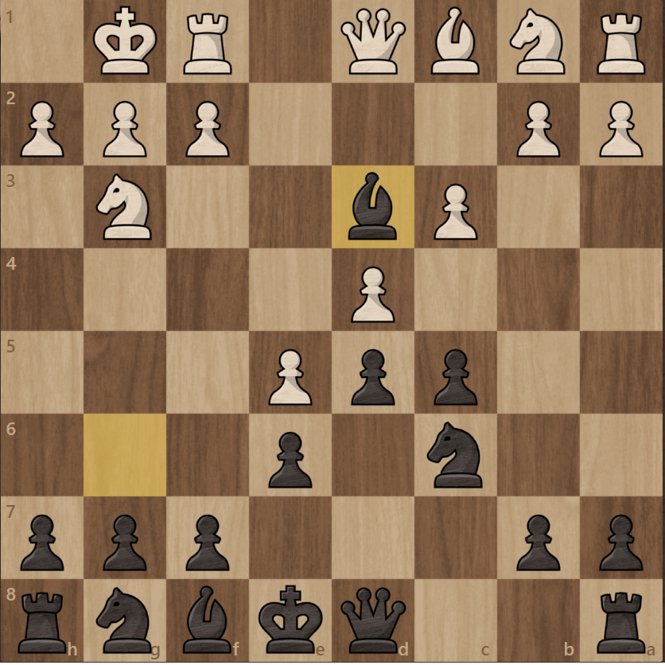

Caro-Kann
Caro-Kann zostało tak nazwane ze względu na dwóch szachistów którzy je opracowali Horatia Caro i Marcusa Kann.
Ruchami rozpoczynającymi Caro-Kann są 1.e4 c6 2.d4 d5

Następnie biały może zagrać różne ruchy wchodząc w różne wersje Caro-kann.
Najpopularniejszymi ruchami są: Sc3 e5 lub exd5
Tworzące odowiednio Caro-Kann Classical variation Exchange variation i Advanced variation



Najlepszą komputerową linią dla Classical variation jest: 3.Sc3 dxe4 4.Sxe4 Gf5 5.Sg3 Gg6 6.Sf3 e6 7.Gd3 Sf6 8. O-O Gxd3

Dla Exchange variation: 3.exd5 cxd5 4.Sf3 Sc6 5.Gf4 Sf6 6.Gd3 Gg4 7.c3 e6 8.Sbd2 Gd6

A dla Advanced variation: 3.e5 Gf5 4.c3 e6 5.Se2 c5 6.Sg3 Gg6 7.Gd3 Sc6 8.O-O Gxd3
